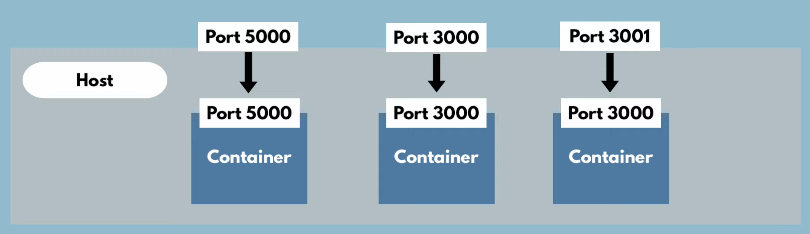
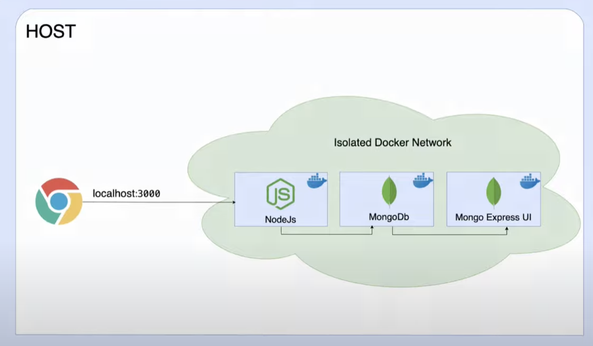
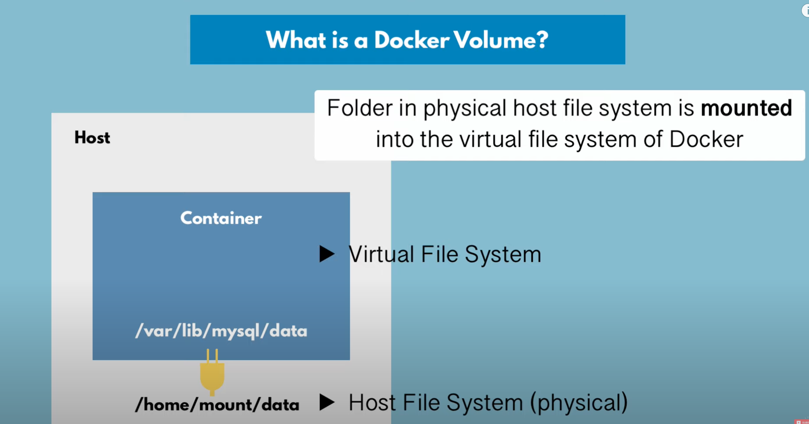

Basics
Running a docker container
bash
Error is because postgress requires a password, so I try again
bash
Note:
: docker run will pull the image and start automatically
Look at running containers
bash
This is an image. Docker has images and containers
-
Images are the actual packages (configuration, PostgresSQL, Start Script)
-
Container actually start the application(The running image. It contains the file system, env variables, etc.)
Look at running and stopped containers
bash
Pull an image
bash
Check all images on the system
bash
Run container detached
bash
Stop Container
bash
Container ports vs Host ports

Specify binding port
bash
Specify container name
bash
Debugging containers
Execute a command in a running container
bash
Run vs. Start
Docker run will create a container from an image and start it. Docker start will start a container that was already created.
Developing with Docker
Pull Images
bash
Docker Network

bash
bash
Docker Environment Variables
Use the e flag to set environment variables.
bash
Docker Compose
yaml
Docker compose will create a network for the containers to share.
depends=on will start the container after the other container is started.
Commands
bash
down will also remove the network.
Dockerfile
Blueprint for building images.
# base image FROM node # you can set environment variables here as well ENV MONGO_DB_USERNAME=admin \ MONGO_DB_PASSWORD=password # create /home/app folder RUN mkdir -p /home/app # Copy current folder files to /home/app # COPY EXECUTES ON THE HOST MACHINE COPY . /home/app # start the app with "node server.js" - this is the entrypoint CMD ["node", "server.js"]
Make image
bash
Docker Volume

Data gets automatically replicated.
3 Volume Types
Host Volumes
: using docker run we specify the paths to the volumes -v /host/path:/container/path. You decide where in the host the volume is.
Anonymous Volumes
: using docker run we specify the paths to the volumes -v /container/path. The volume is created in the /var/lib/docker/volumes host directory.
Named Volumes
: using docker run we specify the paths to the volumes -v name:/container/path. The volume is created in the /var/lib/docker/volumes host directory. You can reference the volume by name. This is the one used in production.
Docker volumes in Docker Compose
yaml